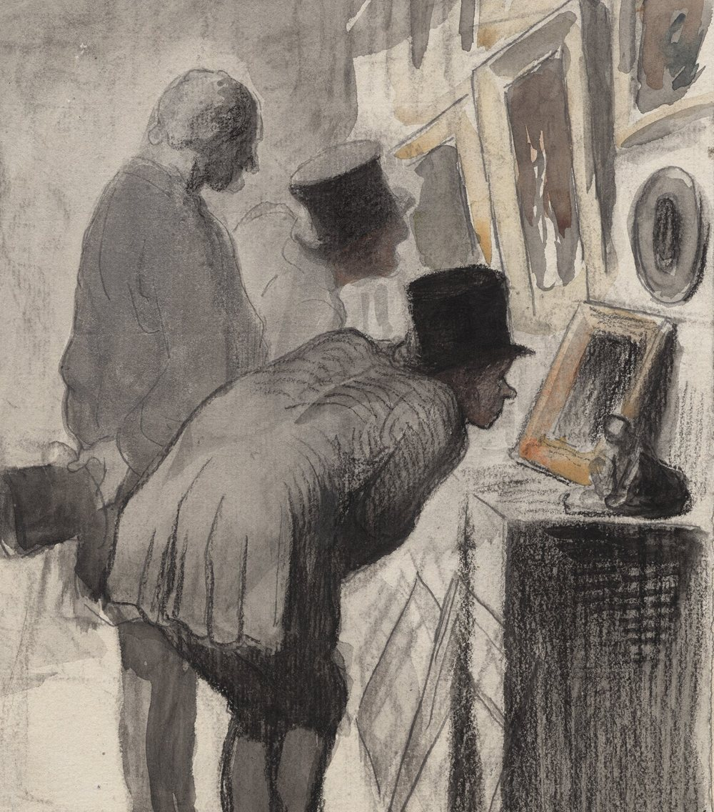
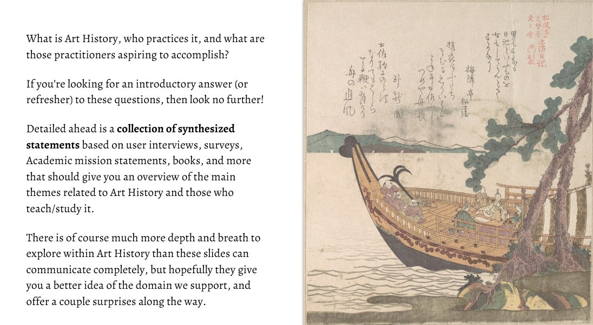
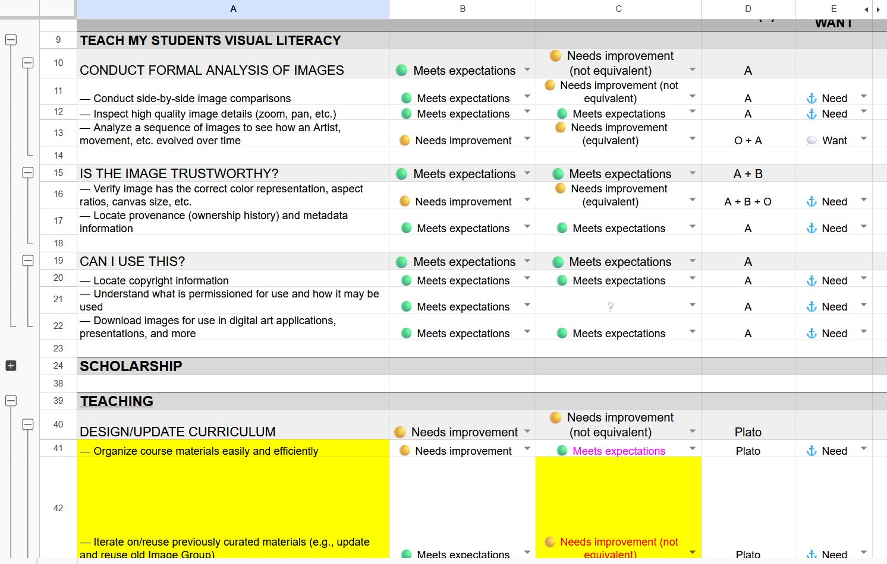
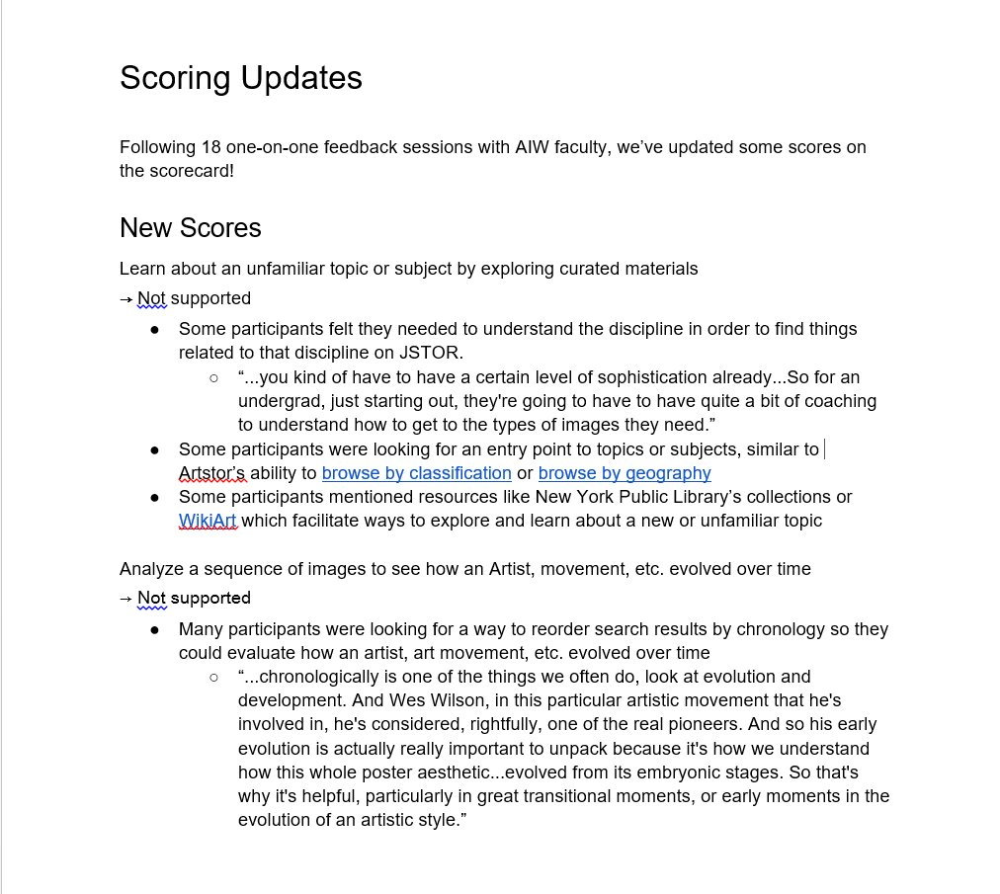
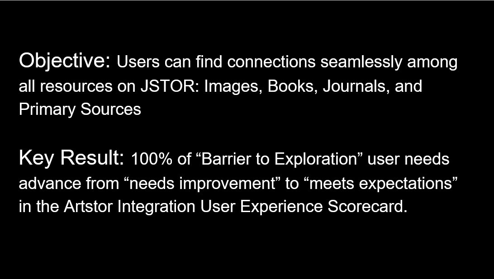
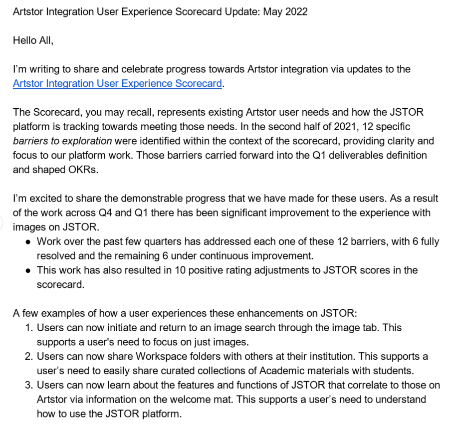

How my User Outcomes Framework became ITHAKA's roadmap to success for a two-year platform integration
When I joined ITHAKA in 2019, its plan to integrate Artstor into JSTOR had stalled. I built a User Outcomes framework that gave teams a shared understanding of Artstor's users and a way to measure progress through the full integration.

ITHAKA's plan to integrate Artstor into JSTOR had stalled
When I joined ITHAKA in 2019, the organization faced a daunting challenge: integrating Artstor, a beloved platform for teaching and research with images, into JSTOR, ITHAKA's much larger platform for scholarly literature, historical documents, and other textual content.
Despite financial and organizational urgency, the initiative had stalled. Teams saw the project as too ambiguous and too daunting, and the sudden move to remote work during the COVID-19 pandemic added to its complexity.
A failed integration risked ITHAKA's finances and its reputation in the academic community
If ITHAKA failed to support Artstor's users on JSTOR, those long-standing relationships could erode.
I traced the stall to two gaps: little knowledge of Artstor's users, and no shared definition of the work
My first question was what was blocking ITHAKA from getting started. Through stakeholder interviews, deep dives into Confluence, and reviews of prior efforts, I learned that staff had very limited exposure to Artstor or its users. They wanted to understand who Artstor's users were, what they cared about, how they used the platform, and the field of art history.
Staff also disagreed on what "Artstor Integration" meant. Did it mean the brand? The toolset? The content?
Without that understanding, teams couldn't identify success metrics or picture what success looked like. To bring clarity, create measures, align teams, and inspire action, I needed a framework that could:
Orient staff to what art history is and why users care about it
Build a shared understanding of our audience
Guide user-centered product design and development
Provide structure to evaluate progress throughout the integration
I built the framework on User Outcomes: the goals users pursue in their work, independent of any product
I chose User Outcomes for the framework. They are research-informed statements written from the perspective of the audience a product intends to reach, describing the goals users are trying to achieve in their lives, careers, or projects, beyond what they do inside a product.
Metrics like CSAT, NPS, and D1 retention look backward: they evaluate an experience someone already had. User Outcomes look forward. They are foundational and generative, built to inspire ideas rooted in a firm understanding of users and their goals, which made them the right fit to unblock ITHAKA.
- "I want to find inspiration I wasn't expecting."
- "I want to trust the source I'm citing."
- "I want to build a lecture quickly, without losing rigor."
- "Use the search filters."
- "Download an image."
- "Increase session length." (a business goal)
I combined existing research with new studies to map who art historians are and what they work toward
I focused on three questions: Who are art historians? What goals are they working toward? What activities do they perform to reach those goals?
I started with a research gap analysis, reviewing existing reports, personas, Google Analytics data, and past interview recordings to see what we already knew, how confident we were, and whether that knowledge was still current.
I then ran new primary research to fill the gaps: user interviews, surveys, workflow analyses, and reviews of classroom materials.
With those insights in hand, I partnered with stakeholders to choose the user goals and activities that best fit ITHAKA's capabilities and organizational direction.
Two artifacts gave a remote organization a shared picture of Artstor's users
ITHAKA's culture, its remote work model, and staff's limited familiarity with Artstor's audience called for two artifacts: a narrative to build context, and a scorecard to guide the work.


I built the framework in 2020 and re-measured against it every research round through 2022
Stalled & ambiguous
No shared definition of the problem. No way to scope, prioritize, or measure progress.
Framework built
Research gap analysis, new primary research, and the first User Outcomes statements drafted with stakeholders.
Baseline established
First full round of scorecard research set the baseline: where JSTOR met or fell short of Artstor users' needs.
Quarterly assessments
Two more rounds re-measured progress against the baseline, refining the scorecard as understanding deepened.
"Barriers to Exploration" & resolution
Grouped the remaining unmet needs into a framework that leadership adopted as an OKR.
The "look for inspiration" outcome led us to ship a Load more button
One scorecard item was "look for inspiration": performing a broad, exploratory search, finding items relevant enough to form a topic, and ideally stumbling onto something unexpected.
Artstor didn't fully support those activities. By 2020, students and instructors were frustrated by how many times they had to click "next" to see more results. They tired and settled for what they had found.
Using How Might We sessions and comparative analysis, we explored three directions for images on JSTOR and tested each against that outcome.
Keep pagination
Felt slow. Users saw fewer items and rarely found something inspiring.
Infinite scroll
Revealed the most items, but users paid less attention and missed the inspiring result.
Load more
Users viewed more items than with pagination and engaged more deeply than with infinite scroll.
Feature parity would have kept pagination, even though it hindered discovery. A behavioral metric like total items viewed would have favored infinite scroll, even though those users scrolled without intent and missed what they needed. The user outcome pointed to "Load more."
The designer on this feature came to the scorecard on her own: she used the user outcomes to seed her ideation, then evaluated each approach against them.
Research updates, a company OKR, and a follow-on framework all used the scorecard's language
Three artifacts trace the framework from research updates to company goals.

Each research round updated specific scorecard rows
Findings mapped to scorecard rows, with participants' own words as evidence.

Leadership wrote the scorecard into a company OKR
The OKR used the scorecard's exact terms, "Barrier to Exploration" and "meets expectations," so the business measured itself in the framework's language.

Unresolved outcomes became the Barriers to Exploration framework
I grouped the scorecard's unresolved items into a new framework, Barriers to Exploration. OKRs and roadmap work centered on closing those gaps, and I reported progress to the organization as ongoing research validated each fix.
My framework guided ITHAKA from a stalled project to Artstor's retirement in August 2024
Research showed JSTOR met the teaching needs of over 90% of Artstor faculty. ITHAKA closed the remaining gaps and retired Artstor on August 1, 2024, and JSTOR became the home for scholarly images and teaching tools.
Along the way, the framework:
- created shared understanding and alignment across teams
- brought clarity to a large, ambiguous project
- informed OKRs and company-wide priorities
- helped teams design past feature parity
- enabled quick scoping and prioritization of what to learn and build next